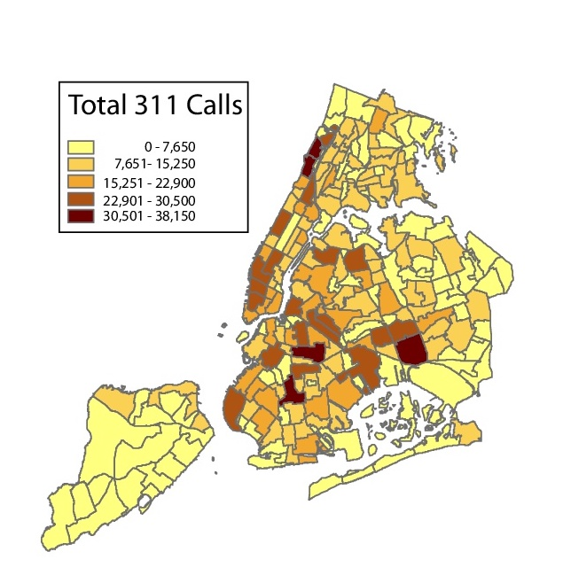

I'm a Master's student in Columbia University's QMSS program. I care about cities and how to make them livable, inclusive spaces for work and play. I enjoy working with data to reveal hidden patterns to these ends.
In my spare time, I'm a Twitter vigilante, Instant Pot chef, and mediocre point guard. Email me at dlkraushar@gmail.com if you want to connect!
What can quality-of-life complaints reveal about social friction in gentrifying neighborhoods?

New Yorkers are famous kvetchers, and 311, the City's non-emergency government services hotline, is a welcome forum for citizens to air their greivances. This project is premised on the notion that there is more than meets the eye when one complains about loud music playing at night or a hotel operating out of a residential building; that such complaints about neighbor behavior are tied to changing neighborhood demographics and the ensuing discord.
Data wrangling and analysis performed in R; ArcGIS used for spatial analysis and mapping.